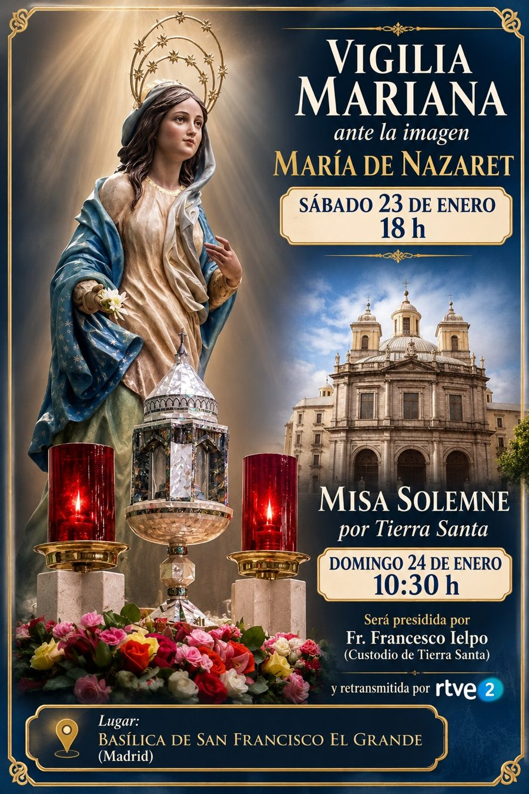
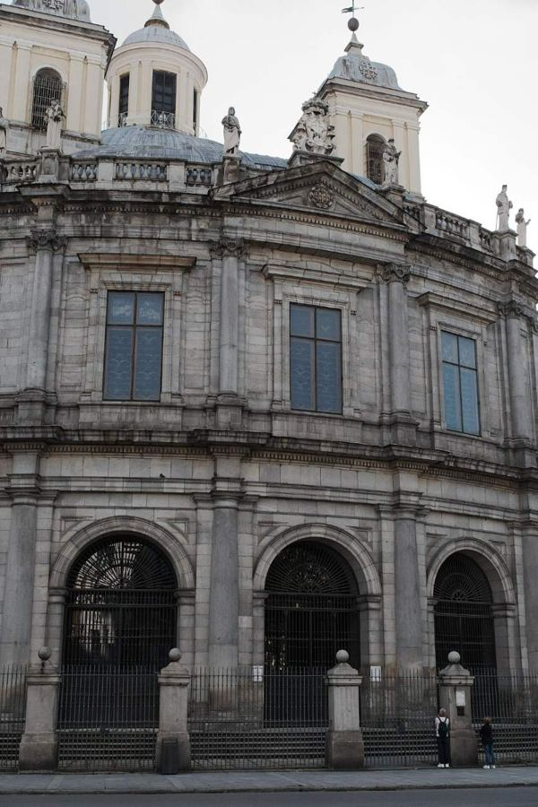
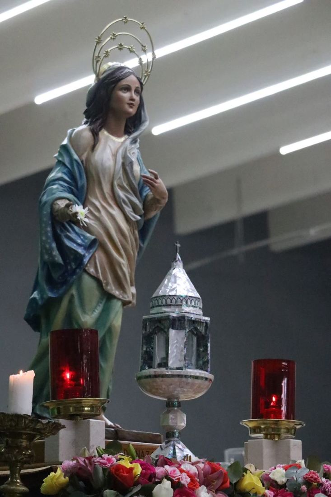
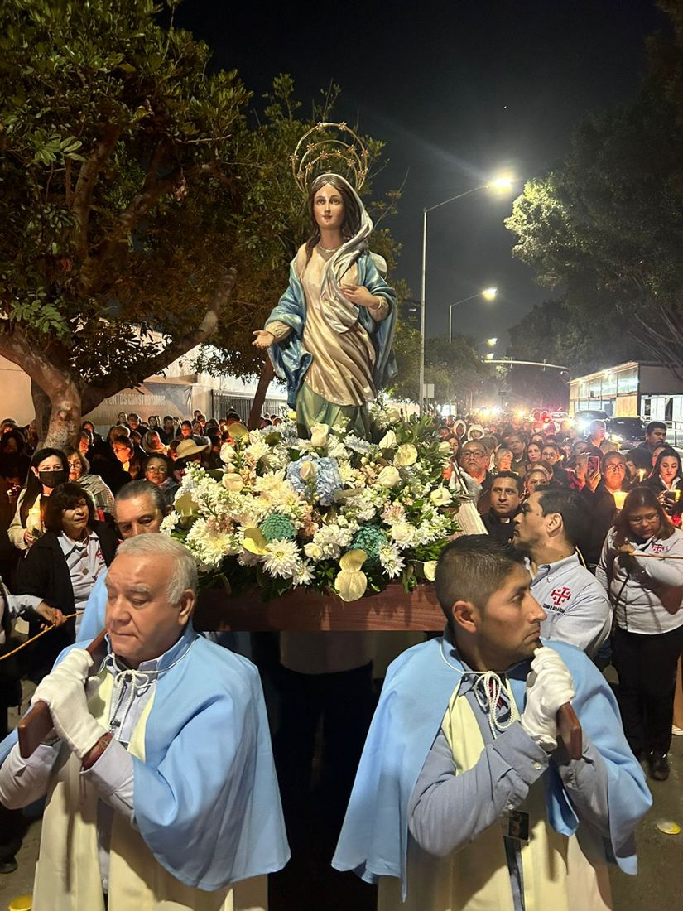
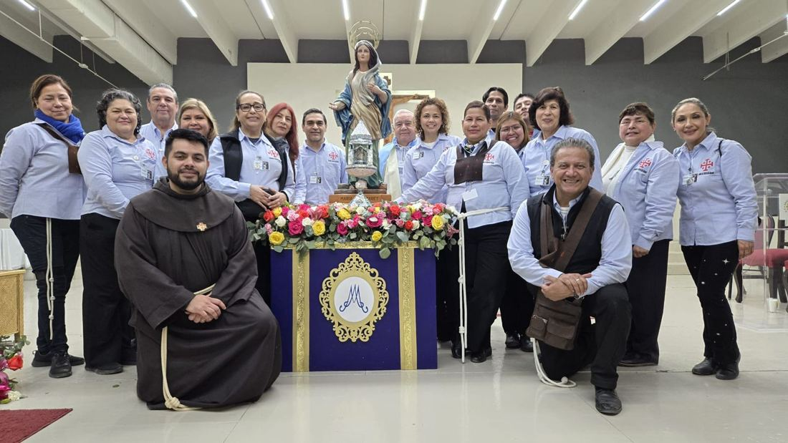
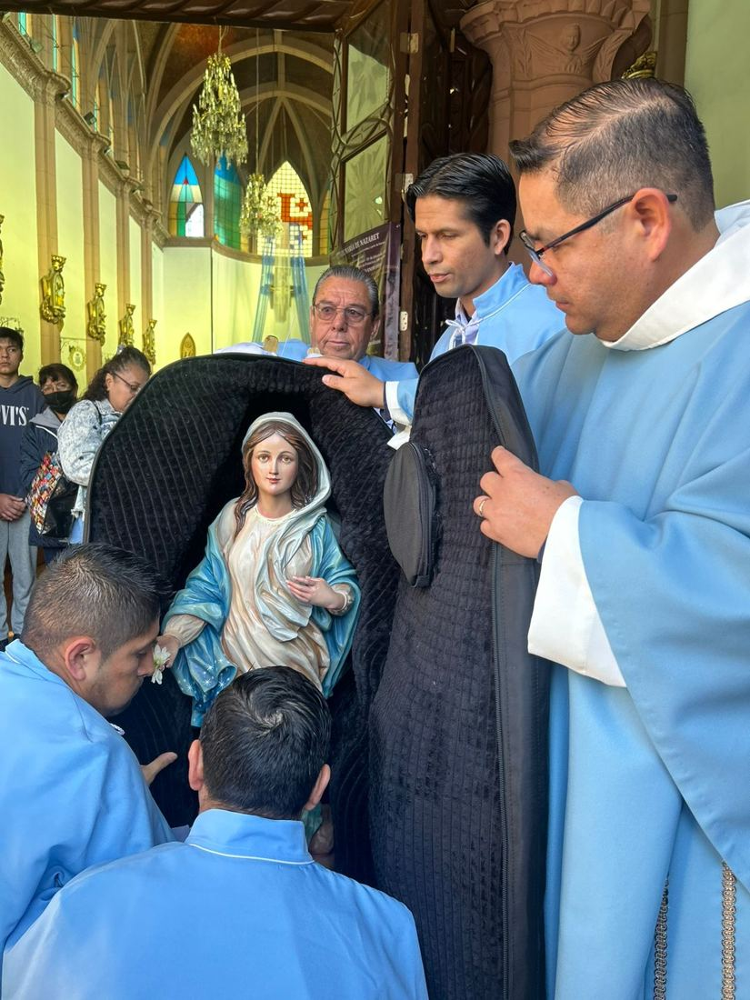
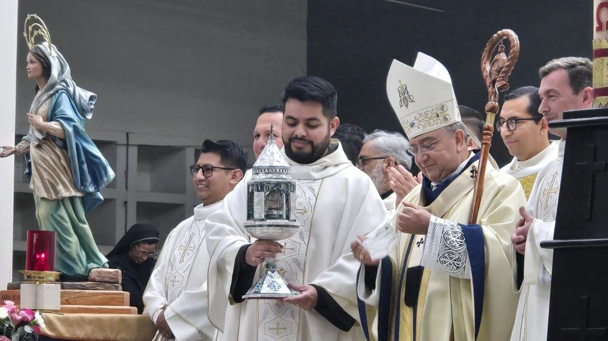

Vigilia mariana ante la imagen María de Nazaret
Oración ante la imagen y la reliquia de la Casa de Nazaret.
18:00 hLa imagen peregrina y la reliquia de la Casa de Nazaret recorren nueve ciudades de España.


Hace más de 25 años estuvo en esta basílica la imagen que hoy se venera en Nazaret. Aquí tienen su sede la Comisaría y el Centro de Tierra Santa, la Asociación Española de Amigos de Tierra Santa y la Orden Ecuestre del Santo Sepulcro de Jerusalén.
Oración ante la imagen y la reliquia de la Casa de Nazaret.
18:00 hPresidida por fr. Francesco Ielpo, Custodio de Tierra Santa, y retransmitida por La 2 de RTVE.
10:30 h
«Ahí tienes a tu madre». Jn 19,27
La imagen viaja junto a un relicario de nácar que guarda una reliquia de la Casa de Nazaret. En cada ciudad habrá Misa votiva de la Visitación para acogerla, y en casi todas, rosario retransmitido por Radio María.
Baja despacio: el mapa sigue a la imagen ciudad a ciudad. Cada semana cambia de casa franciscana.




Entrevista a María Díaz-Ripoll y fr. Luis Quintana, el día de la Sagrada Familia.
La historia de la imagen, la reliquia y el sentido del recorrido, en el número de enero y febrero.